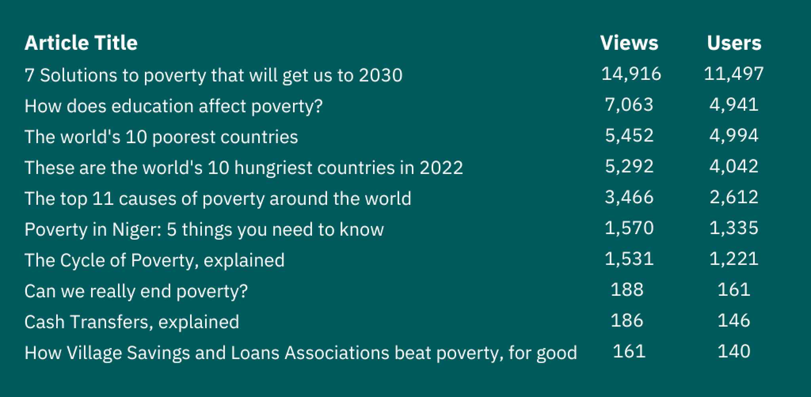

STRENGTHENING DONOR RELATIONSHIPS
How can we engage the experiences of active online donors?

Personalizing the end-to-end engagement process and written material of a triggered email campaign based on donors' interactions with articles posted on the Concern Worldwide US website to optimize engagement from a diverse set of donors.
| ROLE | TEAM | SKILLS | TIME |
|---|---|---|---|
| Marketing Technology Fellow | MarComms | UI Design User Research Writing Copywriting |
8 Weeks |
RESEARCH & IDEATION
About Concern Worldwide US
Concern Worldwide US is a non-profit organization dedicated to transforming lives and communities across the globe. With a steadfast commitment to humanitarian efforts, Concern Worldwide US employs innovative strategies and collaborative partnerships to alleviate poverty, provide emergency relief, and promote sustainable development within vulnerable communities long after Concern's support.
The Problems
In June 2023, CWUS launched a new website. From visual design to urls to links, everything was completely new. Yet, with the revamping of their old website came the implementation of a new tracking pixel, which resulted in inaccuracy in recent user data (i.e. page views on website articles, and subscribers who had engaged with them) on their CRM, Salesforce.
The Goal
I aimed to create a framework for a new email campaign that bridged donor history from Salesforce to viewer analytics from the new website. This way, we can tailor email content to match that of the donor's interests and giving history, to further personalize the donation experience -- ultimately with the goal of increasing donations as well as utilizing two of Concern's most integral platforms - email and their website - to obtain non-governmental donations.
Campaign Focus
The first step involved selecting a campaign focus out of the 6 facets of Concern's work: Climate Change, Emergencies & Refugees, Health & Nutrition, Livelihoods & Empowerment, Education, and Gender Equality.
Given that the campaign is intended for non-major donors (those with first gifts totalling below $1,000), I conducted an analysis comparing data from registered donors on Pardot with the overall site traffic related to different article topics on Concern's website starting from the beginning of 2023 up until their website's relaunch in June. Per Concern's Google Analytics, articles related to Livelihoods & Financial Empowerment received the highest number of visits and users. Furthermore, these Livelihoods articles displayed significant interest from registered non-major donors, showing high engagement scores in redirects and clicks on the articles.
Because of Livelihoods & Financial Empowerment's intertwinedness with other facets of Concern's work, I knew this focus would give me both flexibility in the emails' content, as well as pose as a challenge in encapsulating the breadth of Livelihoods work in Concern's programming - a challenge I was excited to tackle.
Top 10 Performing Livelihoods Articles (by page views and users), Jan 2023 - June 2023
{kind=link}
Source: Concern Worldwide USA, Google Analytics
User Analysis
To gain a further grasp into the recipients of the campaign, I created 5 user personas to support clear communication during the design process. We identified 5 main recipients: the Dissuaded, the Unopened, the Reluctant Donor, the Non-Donor, and the Returning Donor.
Dissuaded Dan
Dan was subscribed to CWUS, but he unsubscribed after receiving the first Livelihoods & Financial Empowerment email. He could have or could not have had previous donor history.
Unopened Uriel
Uriel is a high schooler who subscribed to CWUS emails as a part of his assignment for his AP Global History class. Despite reading his fair share of articles on Livelihoods & Financial Empowerment, he does not check his emails, and is ultimately automatically unsubscribed. He could have or could not have had previous donor history.
Reluctant Rachel
Rachel has been following to CWUS for about a couple of months. She is subscribed to email, opened all of the Livelihoods & Financial Empowerment emails, and even clicked on the donation links; but she has not donated yet.
Non-Donor Nadia
Nadia has a previous donor history with Concern. Yet after receiving the first Livelihoods & Financial Empowerment email she decided to not donate at this time.
Returner Ryan
Ryan has a previous donor history with Concern. After receiving the Livelihoods & Financial Empowerment emails he decided to donate to the campaign!
DESIGN & IMPLEMENTATION
Engagement Program
In crafting an engagement program within Pardot, I begun by utilizing our user personas and segmenting our audience based on their interactions and engagement with the three emails of the series. The program kicks off when subscribers meet the criteria of having read selected articles on Livelihoods and Financial Empowerment and being subscribed to Concern emails.

The first email delves into each recipient's donor history and highlights a recent Concern article they've engaged with. Should the recipient open this initial email within three days, we assess whether they clicked any donation links within, and later donated to the campaign. However, if no donation link is clicked, we proceed to the second phase.

In the second step, an engaging follow-up email, Email #2, is dispatched. In case of a donation, the program concludes, ensuring a successful engagement. If a donation is not made, or if the recipient does not open Email #2, or does but does not click a donation link, we transition to the third phase.

The final email of the series, Email #3, is a strategically crafted message intended to encourage donation by underscoring the urgency and impact of their potential contribution. Essentially an "abandoned cart", message, the third email is targeted for recipients who do not follow through with a donation, despite opening the past 2 emails. If they click on the donation link but do not donate by the 3rd email, they are considered as a Reluctant donor in Salesforce. On the other hand, if they do not click on the donation link and do not donate by the 3rd email, they are considered a Non-Donor.
Throughout the entire journey, engagement scores are meticulously managed, with points awarded for various actions such as email opens, link clicks, and donations, while unsubscribers lead to a reduction in engagement score that helps maintain Salesforce dsts and ensure the ending of those customer communications. Robust reporting and analytics tools enable Concern to closely monitor the program's effectiveness, thus refining our approach to optimize engagement and conversion.
Considerations
With the engagement program completed, I was now able to enter the design phase for the emails - but not without first considering the challenges of email design.
According to a 2021 worldwide study ran on an analysis of 8 billion email opens from 2011 to 2021 (by MarketingCharts & Litmus), people spent an average of 10 seconds reading brand emails in 2021, a number that continues to decline.
Considering that these were fundraising emails, I knew that I needed to design this email in a way that detailed the cause at hand while keeping it concise and easy to read under this 10 second "reading" period.
For each email in the series, they followed along the lines of this outline:
- Opening
- Dynamic Content 1 (“You read...”) - Dependent on Email
- The importance of financial empowerment and how it goes hand in hand with breaking the cycle of poverty
- Call To Action
- Dynamic Content 2 (“Your past support...”) - Dependent on Email
- Donation Button
- Body
- Aspects of Livelihoods Work that Concern engages in
- Concern’s Impact
- Donation Button
- Conclusion
- Thank for support
- In-Line Donation
- Sign Off
Email #1
Considering that this email kicks off the series and is the most personal out of the three potential emails a subscriber would receive, the first email had to live up to be the greatest attention grabber. The goal? Craft the first email as though it's the only shot you have to convince the recipient to donate - which is why the first sentence of the email acknowledges their interest in Livelihoods by reminding them of a Concern article they engaged with.
To obtain the level of personalization that Email #1 requires, I used Pardot's dynamic content, which allows me to manipulate aspects of an email's content based on specific criteria, such as the recipient's attributes, preferences, or behaviors. Here's how it works:
{kind=link}
Define Dynamic Content: Within Pardot, I created dynamic content block for the section of the email that I wanted to change: in this case, a given variant of the "2023-Livelihoods-Triggered-Page" dynamic content was to replace the first paragraph of the email.

Place Dynamic Content: The last step was placing the dynamic content in the email template, which will parse all the previous steps upon send of the email.

I also followed the same process for the email's head image, which is replaced by the user's engaged article's lead image.
As for the last piece of dynamic content for Email #1, I created a Dynamic Content block with 4 different Call to Actions that matched the user's stored Donor Type within Salesforce. Specifics can be viewed in Email #2.
A major challenge I found with crafting all this dynamic content was writing the default content that would need to make sense within the context of 10 different emails. This came up particularly with the second paragraph of the email, which needed to connect into one idea that amassed all 10 articles.
Thus, after many, many edits, we landed at the following, final passage for the second paragraph, which connected well with all of the summaries I'd written for the triggered articles:
This is why Livelihoods and Financial Empowerment programs are at the core of Concern's work. Through Concern’s support, the world’s most vulnerable communities are provided cash assistance, tools, and resources that keep people living on less than $1.90 a day above the poverty line.
The donation button reads: Invest in Change, matching the language of asking for a donation that will innovate communities and families around the world. After the call to action, I decided to include additional details about Livelihoods and Financial Empowerment programming, with an in-line donation link, in case the first half of the email did not provide all the information they needed.
Final Design
Email #2
Although Email #2 does not utilize as much dynamic content as its predecessor, the bulk of the work behind this email was writing content that would entice the reader to click that donation link and donate.
This time, I opened the email with the fact that 719,000,000 people are living in extreme poverty and the recipient has engaged with Concern's content regarding Livelihoods and Financial Empowerment. Including the recipient in Concern's work makes them feel included and seen within Concern's outreach, which is why the next paragraph before the donation button is the same Call to Action dynamic content block from the first email that acknowledges their prior engagement with Concern.
The different Donor Types for the Call to Actions are as follows:
Non-Donor: Has never donated to Concern before.
Non-Convert Donor: Clicked the donation link but did not donate.
Current Donor: Has donated to Concern within the past year.
Lapsed Donor: Has donated to Concern within the past 5 years, but not within this year.

The weaker the recipient's donation status, the stronger the language I utilized in the email's call to action. If they've previously donated, I included the amount they've contributed to acknowledge the recipient's trust in us in the past, and ask for that same trust again with another gift.
I changed the donation button text to Be the Change, to show the recipient how they can be a direct changemaker alongside Concern's work. For the rest of the email, I included clarifying details on how Concern's programming, like the aforementioned Graduation program, comes to fruition by showing how Concern's solutions acknowledge the different causes of poverty, highlighting how Concern is different from other like-minded organizations.
The email ends with a strong Call to Action with the goal of including the recipient: Your concern is just the start. Join us to create lasting change in people's lives today.
Final Design
Email #3
With Email #3, the goal was to get those who clicked on donation links in previous emails, but failed to donate. Hence, the implementation of money handles, which streamlines the donation process while also 1. prioritizing the direct impact their donation could make and 2. challenging the recipient to give an amount they wouldn't have considered before through the provision of other donation amounts.
To reach the several donation ranges, I utilized dynamic content based upon the recipient's largest gift amount. Recipients receive different gift ranges based on whether that amount was less than $100, between $99 and $299, or between $300 and $999.
Final Design
The Outcome
Though I was unable to launch the campaign myself due to time constraints, during this internship, I accomplished my personal learning objectives. I…
- Spearheaded the design process from start to finish
- Worked within a cross-departmental team and learned how to operate within such departments
- Learned from my mentor alongside experienced designers, writers, and other marketing and communications experts
- Gained insights on nonprofit functionality in the marketing technology space, from understanding communications language to direct donor targeting.
I would like to thank my manager and mentor, Jocelyn Carlisle, for without her guidance, this project wouldn't have been possible. The loads of support and incredible experience from her and the MarComms team this summer is something that will stick with me as I continue to grow in my career.
Finding that you want to learn more about Concern Worldwide, or want to go through the motions of the triggered campaign yourself?
First, subscribe to Concern emails here, then, click on any of the below articles to enter yourself into the campaign.
- Solutions to Poverty to Get Us To 2030
- How Education Affects Poverty
- Causes of Poverty
- Poverty In Niger: 5 Things You Need to Know
- World’s 10 Poorest Countries
- Village Savings & Loans/Micro-Finance Explained
- Cash Transfers Explained
- Zero Hunger Explained
- Solutions to Poverty to Get Us To 2030
- World’s Hungriest Countries
Shortly, you should be entered into the Engagement Program and receive the these very emails in your inbox, making your own choices on how to interact with the series!
If you would like to hear a more in-depth version of all that was presented above, feel free to connect with me!